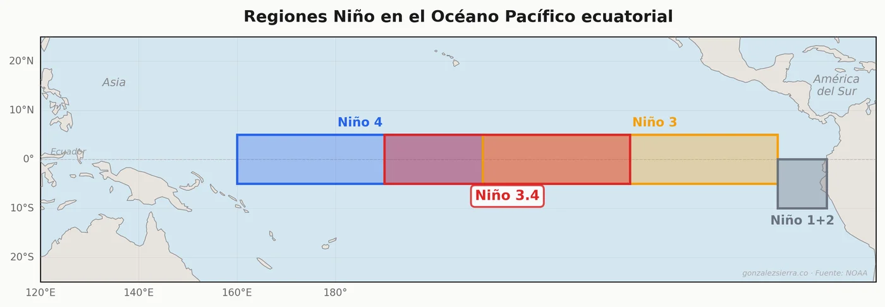
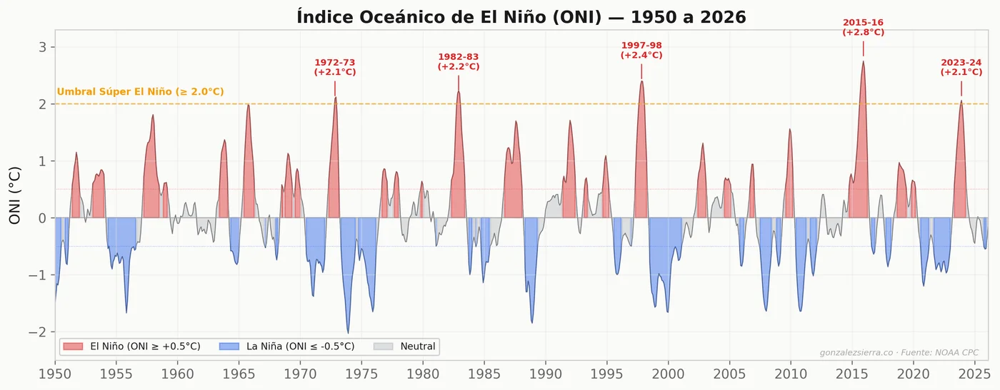
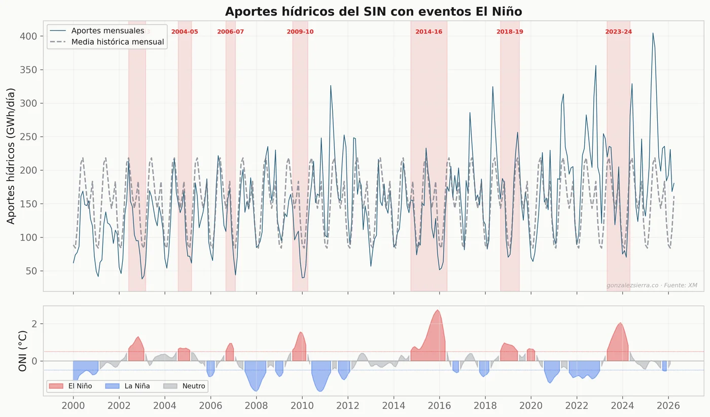
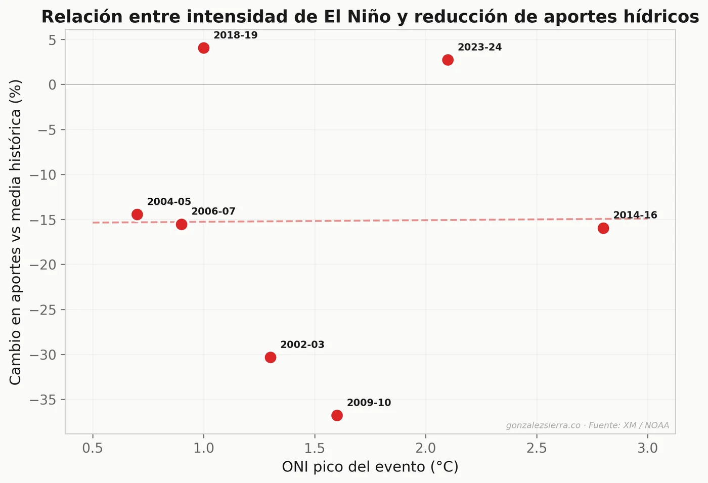
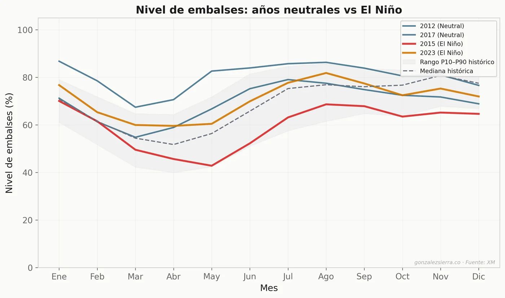
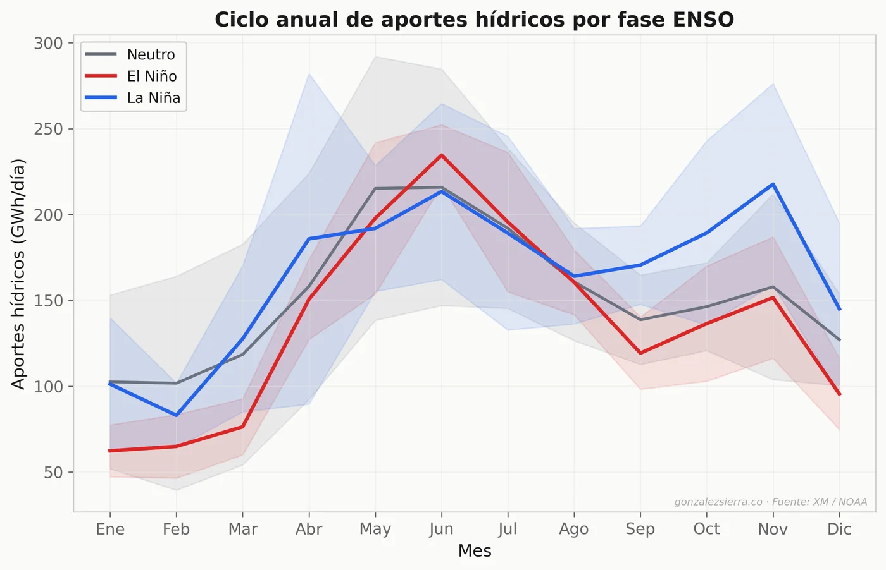
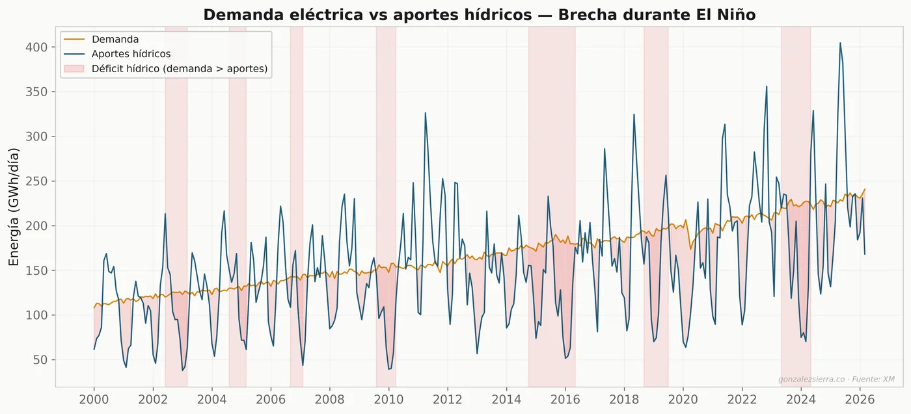
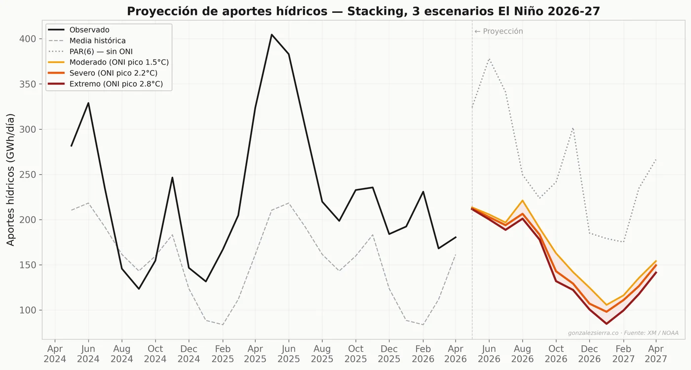
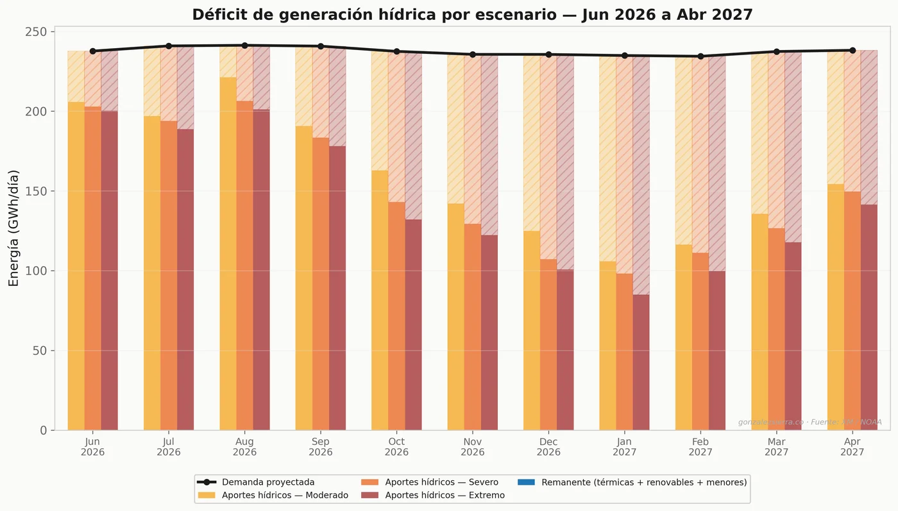

Un análisis cuantitativo de cómo un evento El Niño severo a extremo podría afectar los aportes hídricos, embalses y la seguridad energética de Colombia.
Las señales son cada vez más claras. Después de un prolongado periodo de La Niña (2020-2023) y un El Niño fuerte en 2023-24, los modelos climáticos internacionales apuntan a un nuevo calentamiento del Pacífico ecuatorial para el segundo semestre de 2026 (ver pronósticos de modelos ENSO — IRI Columbia). La pregunta no es si llegará, sino qué tan intenso será y qué impacto tendrá en un sistema eléctrico que depende en un 70% de generación hidráulica.
En este artículo presento un análisis basado en datos del operador del mercado (XM), índices climáticos de la NOAA y modelos de machine learning para cuantificar el riesgo bajo tres escenarios posibles.
El índice ONI (Oceanic Niño Index) mide la anomalía de temperatura superficial del mar en la región Niño 3.4 del Pacífico.

Cuando el ONI supera +0.5°C por cinco meses consecutivos, se declara un evento El Niño. Los eventos con ONI pico superior a 2.0°C se consideran "súper" — han ocurrido tres veces en el registro moderno: 1982-83, 1997-98 y 2015-16.

Colombia es particularmente vulnerable porque El Niño reduce las lluvias sobre las cuencas andinas que alimentan los principales embalses del SIN (Sistema Interconectado Nacional). Menos lluvia significa menos agua en los embalses, menos generación hidro disponible, mayor despacho térmico y, en consecuencia, precios de bolsa más altos.

La Figura 2 muestra 26 años de aportes hídricos del sistema. Los valles más profundos — 2002-03, 2009-10, 2015-16 — coinciden con los eventos El Niño más severos. Pero la relación no es simple.
Uno esperaría que a mayor ONI, mayor reducción de aportes. Los datos cuentan una historia más matizada:

| Evento | Categoría | ONI pico | Aportes (GWh/día) | Cambio vs media | Embalse mín. |
|---|---|---|---|---|---|
| 2002-03 | Moderado | 1.3°C | 102.1 | -30.3% | 45.6% |
| 2009-10 | Fuerte | 1.6°C | 85.5 | -36.8% | 41.8% |
| 2014-16 | Muy fuerte | 2.8°C | 124.4 | -16.0% | 40.1% |
| 2023-24 | Fuerte | 2.1°C | 161.9 | +2.7% | 30.7% |
Hallazgo clave: El evento 2009-10 (ONI 1.6) causó una caída del 37% en aportes, mientras que el 2014-16 (ONI 2.8, el más fuerte registrado) solo -16%. El Niño 2023-24 (ONI 2.1) prácticamente no redujo los aportes agregados.
Esto sugiere que otros factores — como La Niña previa acumulando agua, patrones regionales de lluvia, y la entrada de nuevas plantas como Ituango — modulan significativamente el impacto. Un Súper Niño no garantiza sequía extrema, pero sí aumenta el riesgo.
Lo que sí es consistente: los embalses siempre sufren. El mínimo de embalses durante El Niño 2023-24 fue apenas 30.7% — el más bajo de la serie — a pesar de que los aportes agregados no cayeron tanto.

El comportamiento de los embalses depende en gran medida de la gestión que realizan las empresas operadoras de las plantas hidroeléctricas. Por esta razón, una adecuada planeación que incorpore mejores pronósticos hidrológicos resulta fundamental para la toma de decisiones oportunas, evitando que los niveles de los embalses desciendan a mínimos que pongan en riesgo la atención de la demanda eléctrica.
El impacto de El Niño no es uniforme a lo largo del año. Al desagregar los aportes por fase ENSO, emerge un patrón claro:

El segundo semestre (septiembre a diciembre) es cuando El Niño golpea más fuerte, con reducciones de hasta 30% respecto a condiciones neutras. Esto coincide con el pico del evento en el Pacífico y con la temporada en que los embalses deberían estar llenándose para enfrentar el verano.

La Figura 6 revela la brecha creciente entre demanda y aportes. La demanda ha crecido ~2% anual, mientras que los aportes dependen del ciclo climático. Durante El Niño, la brecha se amplifica — y esa diferencia debe cubrirse con generación térmica más costosa.
Para cuantificar el riesgo, construimos un Stacking Ensemble que combina cuatro modelos de pronóstico — PAR(6), GradientBoosting, XGBoost y Prophet — mediante un meta-modelo Ridge. Los modelos se alimentan de aportes rezagados (1-12 meses), ONI y sus transformaciones no-lineales (cuadrático, acumulado 6 meses, interacción con estacionalidad), temperatura y precipitación. Entrenado con datos de 2001-2022 y validado contra 2023-2026, el ensemble alcanza un MAPE de 14.2% — lo que da confianza razonable en las proyecciones.
Definimos tres trayectorias de ONI para los próximos 12 meses (julio 2026 a junio 2027), basadas en perfiles de eventos históricos análogos:

Escenario extremo (ONI 2.8°C): los aportes caerían a 85 GWh/día en enero 2027 — un 44% por debajo de la media histórica para ese mes. Este es el punto de máxima vulnerabilidad, coincidiendo con el verano y la mayor demanda por aire acondicionado.
Un aspecto notable: incluso en el escenario severo, el promedio anual de aportes apenas cambia (-0.4% vs media). El riesgo no está en el promedio anual, sino en los meses pico del evento (diciembre 2026 – febrero 2027), donde los aportes podrían caer entre 100 y 85 GWh/día. Es en esos 3-4 meses donde se concentra la presión sobre embalses, generación térmica y precios.

El remanente no implica que las plantas hidroeléctricas con embalse generen únicamente lo equivalente a sus aportes: estas plantas pueden entregar energía por encima de sus afluencias, pero a costa de reducir los niveles de sus embalses, lo que exige una gestión cuidadosa del recurso hídrico. Históricamente, en condiciones de escasez hídrica, las plantas térmicas han atendido entre el 45% y el 50% de la demanda diaria del sistema, mientras que el resto es cubierto por la generación hidráulica, las renovables no convencionales y las plantas menores.
El Niño reduce los aportes hídricos, pero la magnitud depende de factores que van más allá del ONI: la fase ENSO previa (La Niña acumula agua), el estado inicial de embalses, y los patrones regionales de precipitación. Los modelos condicionados por ONI mejoran significativamente el pronóstico (MAPE 14% vs 30% del baseline), pero la incertidumbre inherente al sistema climático impone un piso a la precisión.
• Nivel de embalses al inicio del evento: si entramos a julio 2026 con embalses por debajo del 60%, el margen de maniobra se reduce dramáticamente.
• Disponibilidad térmica: la capacidad de respaldo térmico (gas natural, carbón, líquidos) será determinante en los meses pico.
• Velocidad del calentamiento: un ONI que sube rápido (>0.5°C/mes) genera impactos más severos que un calentamiento gradual.
• Contexto geopolítico y costos térmicos: este posible Súper El Niño podría materializarse en un momento particularmente desfavorable para los costos de generación térmica. El conflicto geopolítico en Oriente Medio ha restringido cerca del 25% del flujo normal de petróleo debido a la situación en Irán, llevando los precios de los combustibles a niveles máximos. Este encarecimiento se transmite directamente al sector eléctrico colombiano a través del costo del gas natural importado y los combustibles líquidos utilizados por las plantas térmicas. Esta presión ya se refleja en el alza del último Precio de Escasez de Activación publicado por XM, que se ubica en 1.128 $/kWh, lo que encarecería significativamente la atención de la demanda durante un evento de El Niño severo.
Este análisis utiliza datos públicos de XM (aportes, demanda, embalses) y NOAA (ONI, clima). Los modelos incluyen un PAR(6), GradientBoosting, XGBoost y Prophet, combinados mediante un Stacking Ensemble con meta-modelo Ridge. Todo el código es reproducible y está disponible en el repositorio del proyecto.